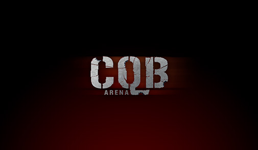
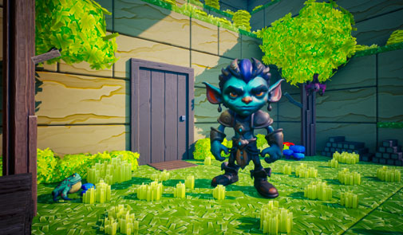

Racing car
Sport car set up in Unreal Engine with animated doors, steering, interior details, functional lights, and speedometer.
Learn moreGame Dev: AAA, Solo, Game Jams

Dive into a dynamic pirate adventure where you'll challenge sea monsters and Davy Jones to break an ancient curse! This game combines engaging naval combat, unique mechanics, and the thrilling evolution of your ship.
show more


Unleash magic in dynamic VR PvP battles, where spells come alive directly in your hands! As Character Department Team Lead, I ensured the visual and technical excellence of every combatant, crafting optimized heroes for thrilling online arenas.
show more



Step into a realistic VR training simulator on Meta Quest, designed for military CQB exercises against cardboard targets! I focused on creating optimized environment models and ensuring highly realistic weapon interactions for immersive training.
show more



Embark on a unique 3D side-scrolling platformer where a magical Gnome can transform into various creatures! Each transformation not only grants him unique abilities but also changes the level's visual style, sounds, and music, revealing new paths and hidden secrets.
show more


Sport car set up in Unreal Engine with animated doors, steering, interior details, functional lights, and speedometer.
Learn more
Modular sci-fi pack with 130+ assets, animations, blueprints, sound, and full Unreal Engine 4 project setup.
Learn moreLet’s build something cool together. I’m always open to new collaborations, freelance work, or creative partnerships. You can find all the ways to reach me — email, YouTube, social media — by heading to the contact page. Looking forward to hearing from you.